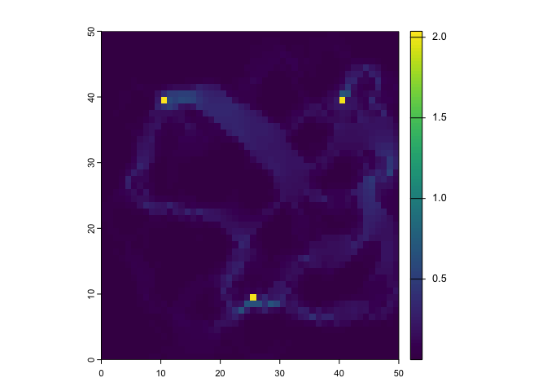
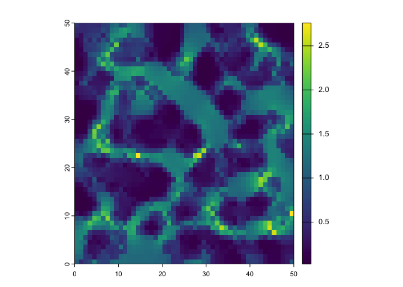

circuitscaper provides a streamlined R interface for Circuitscape.jl and Omniscape.jl. It allows you to run these high-performance landscape connectivity models entirely from R, while Julia handles the heavy lifting under the hood.
-
Native R Workflow: Input and output
terraraster objects directly. - Automated Setup: One-line installation of Julia and all required dependencies.
- High Performance: Leverages Julia’s state-of-the-art solvers for large landscapes.
Note: circuitscaper is an independent R package and is not affiliated with the Circuitscape development team. It is a lightweight wrapper to the excellent Julia tools developed by Brad McRae, Viral Shah, Tanmay Mohapatra, Ranjan Anantharaman, and collaborators.
Installation
# 1. Install the R package
remotes::install_github("matthewkling/circuitscaper")
# 2. Let the package install Julia and the necessary Julia libraries
library(circuitscaper)
cs_install_julia()Example
library(circuitscaper)
library(terra)
# Load an example resistance raster
resistance <- rast(system.file("extdata/resistance.tif", package = "circuitscaper"))
# Pairwise Circuitscape
# (result is a list containing the pairwise resistance matrix and current maps)
focal_sites <- matrix(c(10, 40, 40, 40, 25, 10), ncol = 2, byrow = TRUE)
result <- cs_pairwise(resistance, focal_sites)
plot(result$current_map)
# Omniscape -- wall-to-wall moving-window connectivity
# (result is a multi-layer raster of current flow variables)
result <- os_run(resistance, radius = 10)
plot(result$normalized_current)
Functions
| Function | Description | Julia backend |
|---|---|---|
cs_pairwise() |
Pairwise effective resistance and current flow | Circuitscape.compute() |
cs_one_to_all() |
One-to-all connectivity analysis | Circuitscape.compute() |
cs_all_to_one() |
All-to-one connectivity analysis | Circuitscape.compute() |
cs_advanced() |
Advanced mode with custom sources and grounds | Circuitscape.compute() |
os_run() |
Omniscape moving-window connectivity | Omniscape.run_omniscape() |
cs_setup() |
Initialize Julia session (called automatically) | JuliaCall::julia_library() |
cs_install_julia() |
Install Julia and required packages |
JuliaCall::install_julia(), JuliaCall::julia_install_package()
|
Requirements
- R >= 4.0
- Julia >= 1.9 (installed automatically via
cs_install_julia()) - R packages: terra, JuliaCall
Learn More
- Getting started vignette
- Circuitscape user guide
- Omniscape documentation
- McRae, B.H. (2006). Isolation by resistance. Evolution, 60(8), 1551-1561.
- McRae, B.H. & Beier, P. (2007). Circuit theory predicts gene flow in plant and animal populations. PNAS, 104(50), 19885-19890.
- McRae, B.H., Dickson, B.G., Keitt, T.H. & Shah, V.B. (2008). Using circuit theory to model connectivity in ecology, evolution, and conservation. Ecology, 89(10), 2712-2724.